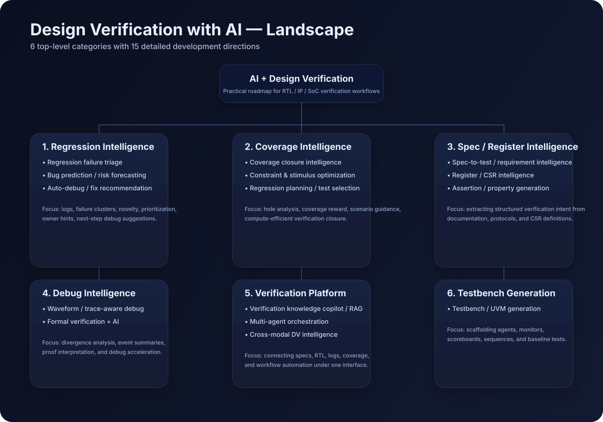

核心判断
AI 最适合先做“验证工程师副驾驶”
在验证工作里，AI 最适合先解决高频、重复、信息噪声大的任务，比如：看 log、归类 fail、总结 coverage hole、梳理 spec 与 test 的映射关系，而不是一上来替代 signoff 判断。
这是一个围绕 AI + Design Verification 的实用型项目主页，重点整理了如何把 AI 用在 回归失败分析、coverage closure、寄存器/规格理解、RL 测试优化、以及 波形调试辅助 上。
在验证工作里，AI 最适合先解决高频、重复、信息噪声大的任务，比如：看 log、归类 fail、总结 coverage hole、梳理 spec 与 test 的映射关系，而不是一上来替代 signoff 判断。
这是最实用的起点。AI 可以帮助解析 simulation/UVM 日志、聚类相似失败、判断可能的 root-cause 类别、估计新问题与旧问题、并给出下一步 debug 建议。
聚焦 coverage closure。AI 帮你分析 black-box / white-box coverage、解释 coverage hole、把 hole 映射回 RTL / feature，并建议下一步应该补什么 test 或 constraint。
把寄存器文档、字段规则、访问属性、依赖关系转成结构化验证知识，支撑 register test、constraint 建议和 traceability。
用强化学习或自适应策略优化 test prioritization，在有限计算预算下更快提升 coverage 或发现更有价值的问题。
一个多代理 verification framework，让 coverage、log、spec、assertion、waveform 等能力在统一编排层下协同工作。
把 AI 接到 RTL debug / waveform 工作流上，通过结构化的事件摘要帮助定位 first divergence 和 root cause。
这张图把本项目的 6 个一级分类和 15 个细分方向用一张结构图串了起来。
